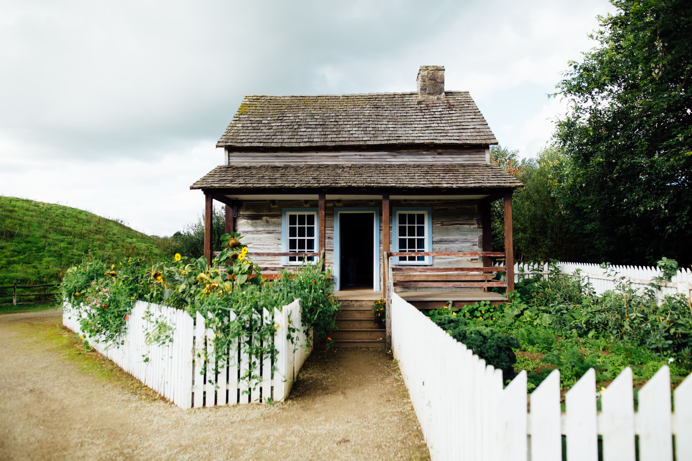

The Old Potting Shed
York, United Kingdom
Set in York in the North Yorkshire region, The Old Potting Shed features a garden. The accommodation is 7 km from the York Minster.
The lodge is fitted with a flat-screen TV.
Guests at the lodge can enjoy a continental breakfast.
York racecourse is 8.5 km from The Old Potting Shed, while University of York is 6 km away. The nearest airport is Leeds Bradford International Airport, 38 km from the property.
1 roomAmenities
- Wi-Fi
- Pets Allowed